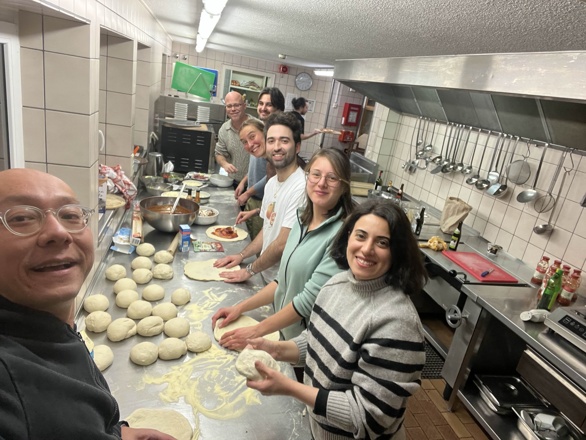
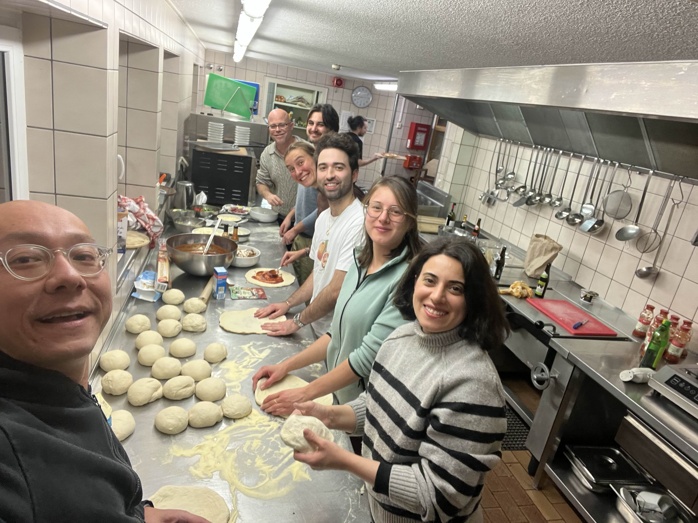
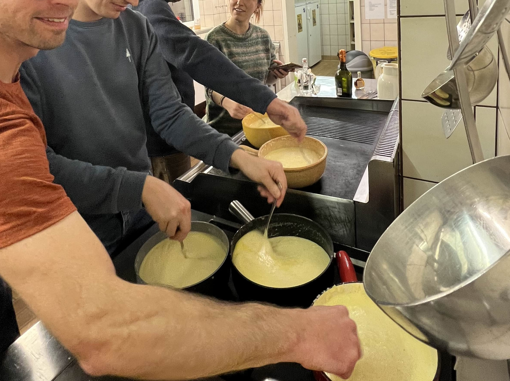
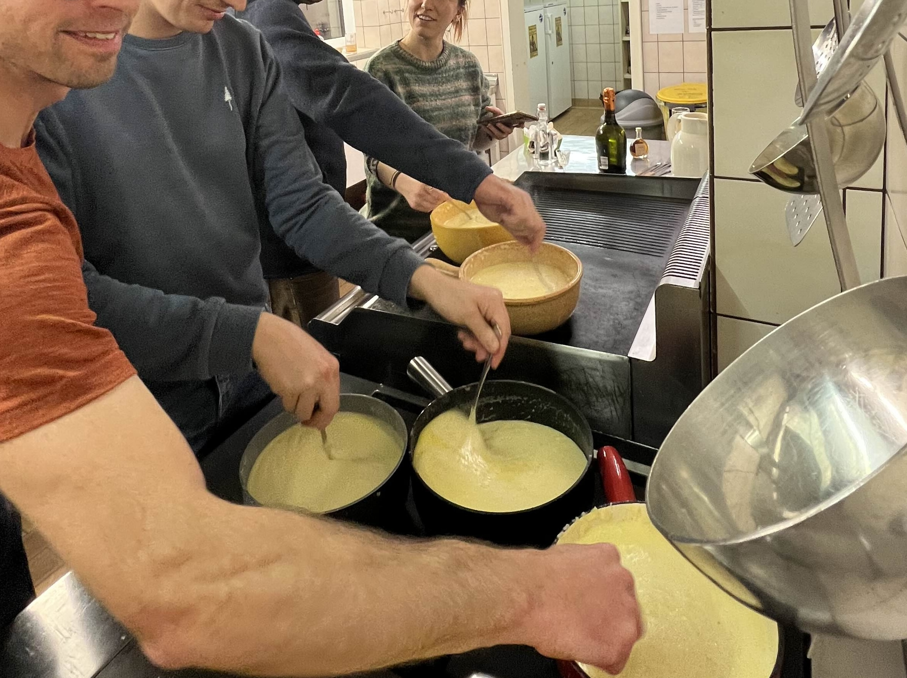
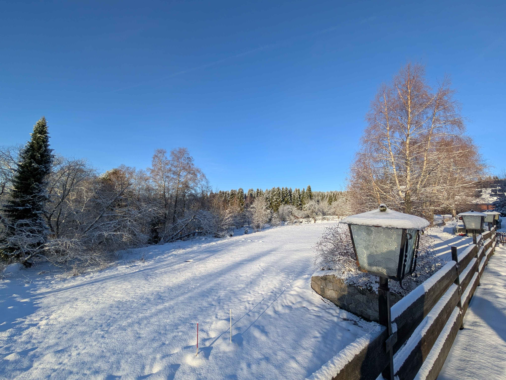
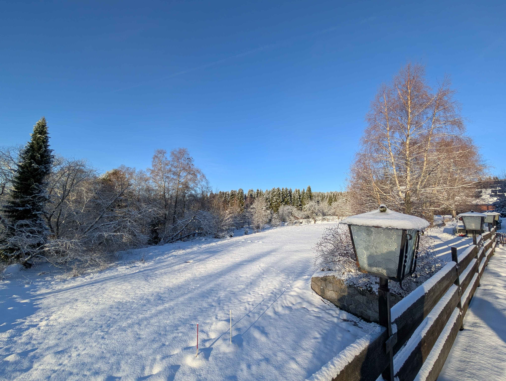

We held our seventh (8th!) GPU4GEO Julia hackathon on November 24-28, 2025 in Black Forest (DE), focussing on a wide range of Julia topics. Hereafter a glimpse into the progress made by some participants on various Julia-related projects and some visual impressions...
...but first a glimpse into


 

 

 


Heat conduction and LaMEM.jl
Jana David
Following up on work started during the Hackathon v7 in April 2025, I worked on experimental simulations using LaMEM.jl. Now, for my Master’s thesis, I am studying heat diffusion codes using the pseudo-transient solution method to leverage GPU acceleration.


Thanks to valuable feedback, I gained a better understanding of Chmy.jl, a package designed for discretising and prototyping transient (heat conduction) problems using an iterative finite-difference schemes. That is initially challenging for beginners, but with practice it enables rapid experimentation with boundary conditions, time-stepping strategies, and spatial discretisation without requiring deep expertise in low-level code optimisation. I took the opportunity to engage directly with the developers of the packages I use daily. I hope future Master’s students will have similar opportunities to connect with the modelling community and enrich their research.
PETSc.jl
Boris Kaus
PETSc is an important package for scientific computing on massively parallel high-performance computers. It is used in one way or the other in many open-source packages where it allows users to discretise the governing equations in parallel and use a whole zoo of customisable solvers to solve them in parallel (while changing the solvers with command-line options). Having a Julia interface to PETSc is therefore a natural request from users. This indeed exists in the form of PETSc.jl of which Boris is a maintainer. Unfortunately, only a very small part of PETSc was wrapped to Julia because we created manual wrappers for every function. Since PETSc is a huge library with many decades of development manpower going into it by a large team of (mostly) volunteers, making wrappers for the full library in this way is nearly impossible.
Since our first hackathon, we have been working on improving PETSc support in Julia. Initial efforts focussed in preparing precompiled binaries of the PETSc library, that work on all modern operating systems PETSc_jll (The Yggdrasil build recipe is here). Thanks to this we could precompile binaries for the geodynamic code LaMEM that work on all operating systems which is a great help for users (see LaMEM.jl).
The issue with the PETSc.jl package was the difficulty of wrapping all functions. The beginning of the package dates back to 2016. But after many years of stalling development, because the initial contributors took up other jobs, Jeremy Kozdon and Boris started to work on this again in 2021. The ultimate goal was always to create automatic wrappers for the whole library, and Jeremy made fantastic progress during those days (using Clang). Yet, after Jeremy moved to industry this effort mostly stalled as well (lack of time on Boris side). More recently, Viral Shah helped to ensure that the main code was working again with more recent Julia versions. Yet, the limited functionality remained.
This changed more recently, mostly because the main PETSc developer, Barry Smith, created a python script to automatically read in the whole PETSc library and return every function, structure etc, with arguments and types. Boris utilised that to automatically wrap the whole library, which started in september 2025 and is now achieved. Whereas the wrapping is not fully fool-proof (it does require manual work in some cases), it has the nice features that it automatically converts the docstrings from C to Julia and that it returns output objects in a more Julia-manner. Whereas the library is in principle wrapped, we can only know for sure if it works properly if we have tests for it all. Several years back Jeremy, Nicolas Berlie, Pascal Aellig and Boris created a whole range of tests for parts of PETSc (such as Mat, KSP, SNES, Vec, DMDA, DMStag objects). Before and during the hackathon Boris continued the work to make these tests compatible with the latest version of the library. The work is not fully finished, but we are nearly there. If you want to have a look, check out:
https://github.com/JuliaParallel/PETSc.jl/tree/bk/wrapping_tests
Once these tests are finalised and we clean up the documentation, a pull request will follow. We still need more tests for other parts of the library (say the DMPLEX interface to generate finite-element codes), but we leave that for future pull requests.
Having a Julia interface to PETSc, rather than using PETSc directly from C brings many advantages. We can, for example, combine automatic differentiation tools of Julia to compute the jacobian. We have callback functions from PETSc to Julia to define residual functions. At the same time, we can use the full PETSc ecosystem to solve the equations with multigrid without having to code this up manually. This all works on MPI parallel machines as well. It can directly be combined with the whole Julia ecosystem (plotting, machine learning etc.). Here the results of the porosity_waves.jl example in 1D, which gives nice Newton convergence at every solution step:

Playing with Chmy.jl v0.2
Boris Kaus & Ivan Utkin
Ivan presented Chmy v0.2 during the Hackathon, which is a game-changer for everyone interested in solving PDE's using (staggered) finite difference. It basically uses a symbolic language to construct the discretisation, which is computed at compile-time, and thus comes at no costs during code execution.
Boris did some finger-warming exercises with it and wrote some 1D & 2D acoustic wave equation codes.

Introducing Advection into DEDLoc
Arne Spang & Albert de Montserrat
Albert and me met a few weeks ago to add advection (i.e JustPIC) to the 2D version of DEDLoc. I finished the work at the hackathon and tested several cases for my thermal runaway models. Considering advection of temperature reduces the maximum temperature by about 100 C and maximum velocities by about one order of magnitude. Interpolating directly from particles to cell centers results in a smaller impact. For a strongly refined grid, the effect on temperature is still large, but velocities are almost unaffected by advection. Interpolating directly to centers does not work here yet, so work remains in progress.

flexOPT.jl
Nobuaki Fuji & Thibault Duretz
While still under construction, flexOPT can now handle many data formats (including your drawing) to compute seismic wave propagation, neutrino propagation (more to come, I hope). During this 8th edition of hackathon, I was concentrated on the optimisation of compact operator coefficients construction with the aid of GPU. Unlike equation 42 of Fuji and Duretz (2025), still unpublished, Thibault and I wanted to propose to use mixture of Taylor expansions from all the points in time and space concerned, which rapidly increases the number of for-loop... Thanks to Ludo and Ivan, I was able to make that motor work. But since I do not have still sexy figures, here I just show the whatsoever model that you can literally draw by yourself.